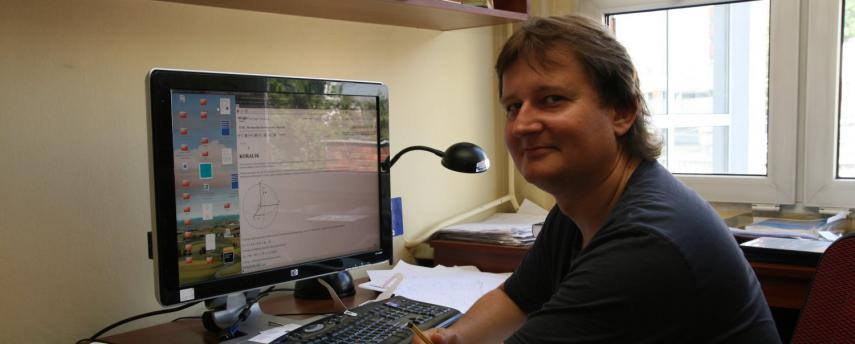

1. O autorach¶
1.1. Marek Łukaszewski¶
Absolwent Uniwersytetu Śląskiego, Uniwersytetu Quebec w Montrealu i Szkoły Głównej Handlowej w Warszawie. Doktor fizyki i Master of Business Administration.
W dotychczasowej swej działalności tworzył od podstaw większość firm (10), w których pracował. M.in. tworzył pierwsze w Polsce, po wojnie, joint ventures partnerów prywatnych. Pełnił szereg funkcji menedżerskich m.in.: - Prezesa Zarządu Krajowego Funduszu Kapitałowego S.A., Prezesa Izby Zarządzających Funduszami i Aktywami, Prezesa Stowarzyszenia Towarzystw Funduszy Inwestycyjnych w Polsce. Prezesa Zarządu Górnośląskiego Towarzystwa Funduszy Inwestycyjnych SA. Wcześniej Wiceprezes Zarządu Funduszu Górnośląskiego S.A. i Wiceprezes Zarządu Międzynarodowej Szkoły Finansów i Bankowości w Katowicach.
Związany z rynkiem kapitałowym od 1991 roku. Był również Członkiem i przewodniczył pracom Prezydium Porozumienia na rzecz rozwoju polskiego rynku kapitałowego, Członkiem Rady Rynku Kapitałowego (2004r), założycielem i członkiem Polskiego Instytutu Dyrektorów - instytucji dedykowanego sprawom Corporate Governance - czyli zasadom etyki w biznesie.
Był także członkiem prezydium Komitetu Koordynującego przy Związku Banków Polskich do Spraw Standardów w Bankowości - uczestniczył w grupie eksperckiej w zakresie Rynku Pieniężnego i Kapitałowego. W Stowarzyszeniu Towarzystw Funduszy Inwerstycyjnych - przewodniczył Zespołowi ds. Standardów.
1.2. Marcin Kostur¶
Marcin Kostur, fizyk. Stypendysta DAAD, Fundacji na Rzecz Nauki Polskiej. Pracował na Uniwersytetach w Anglii, Niemczech, USA i RPA. Laureat Center for Nanoscience w Monachium za publikację roku w 2007 i 2008.
Zajmuje się badaniami układów złożonych począwszy od złącz Josephsona, syntetycznych nanoporów i motorów molekularnych po dynamikę płynów. Jest autorem ponad 50 prac naukowych. Ekspert w zakresie programowania równoległego, technologii GPU i chmurowych systemów obliczeniowych.
Entuzjasta stosowania nowoczesnych metod komputerowych w edukacji i popularyzator nauki. Autor i lider projektu iCSE wdrażającego powszechne stosowanie systemu Sage i języka Python na Wydziale Matematyki Fizyki i Chemii Uniwersytetu Śląskiego.


{kind=link}